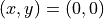
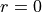
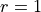
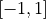
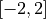
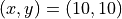
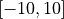
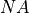

Detectors¶
Detectors are used to collect the weights of photon packets that escape the
sample at the top or bottom sample surface or to collect the weight of photon
packets that is specularly reflected when launching with the selected source.
The three detector locations can be populated and passed to the Monte Carlo
simulator through the xopto.mcml.mcdetector.base.Detectors.
All the detector types that can be used in the Monte Carlo simulator
are implemented by subclassing xopto.mcml.mcdetector.base.Detector.
The xopto.mcml.mcdetector module includes a number different detectors:
xopto.mcml.mcdetector.total.Totalimplements a detector that collects the weight of photon packets into a single accumulator.xopto.mcml.mcsdetector.radial.Radialimplements a radial detector that collects the photon packets through concentric annular rings.xopto.mcml.mcdetector.cartesian.Cartesianimplements a Cartesian detector that collects the photon packets through a grid of rectangular detectors.xopto.mcml.mcdetector.symmetric.SymmetricXimplements a Cartesian detector that is symmetric across the x axis (uses the absolute value of y coordinate).xopto.mcml.mcdetector.probeimplements several several standard and custom parameterized layouts of optical fibers in optical fiber probes.xopto.mcml.mcdetector.probe.sixaroundone.SixAroundOneimplements the common six-around-one layout of optical fibers.xopto.mcml.mcdetector.probe.lineararray.LinearArrayimplements a linear layout of optical fibers, assuming that all the fibers are equal.xopto.mcml.mcdetector.probe.fiberarray.FiberArrayimplements a general layout of optical fibers, where each optical fiber can have different properties.
The individual detectors are conveniently imported into the
xopto.mcml.mc and xopto.mcml.mcdetector modules.
Note
The first and last accumulator of the detectors along each axis will also collect/accumulate the weights of photon packets that exceed the lower and upper limit of the corresponding axis.
Radial¶
The following example shows how to create a
Radial detector centered at
 that collects photon packets from  mm
to  mm through concentric annular rings of thickness
10 μm. Note that the distribution of detectors along the radial
direction is defined by Axis.
from xopto.mcml import mc
det = mc.mcdetector.Radial(mc.mcdetector.Axis(0.0, 1.0e-3, 100))
To use a logarithmic spacing of annular rings, set the input parameter
logscale=True.
from xopto.mcml import mc
det = mc.mcdetector.Radial(mc.mcdetector.Axis(0.0, 1.0e-3, 100, logscale=True))
The acceptance cone of the detector can be limited by specifying the minimum
acceptance angle cosine. The angle is by default computed relative to the
top or bottom sample surface normal. This behavior can be customized by
setting the reference direction through the direction input argument
to a custom unit-length vector.
Note
The acceptance cone is applied after the photon packet leaves the sample and is refracted into the surrounding medium.
The following example creates a radial detector that collects photon packets within ±10 o of sample surface normal.
To use a logarithmic spacing of annular rings, set the input parameter
logscale=True.
from xopto.mcml import mc
import numpy as np
cosmin = np.cos(np.deg2rad(10.0))
det = mc.mcdetector.Radial(
mc.mcdetector.Axis(0.0, 1.0e-3, 100, logscale=True),
cosmin=cosmin
)
Cartesian¶
In the next example, we create a
Cartesian detector that collects
photon packets through a grid of rectangular accumulators that span
 mm along the x axis and  mm along
the y axis. The size of the rectangular accumulators is
 μm. Note that parameters cosmin and
direction can be optionally used to limit the acceptance cone of the
detector.
from xopto.mcml import mc
det = mc.mcdetector.Cartesian(
xaxis = mc.mcdetector.Axis(-1.0, 1.0, 200),
yaxis = mc.mcdetector.Axis(-2.0, 2.0, 400),
)
If a Cartesian detector is created with a single axis, the axis configuration is applied to the x and y axis.
from xopto.mcml import mc
det = mc.mcdetector.Cartesian(mc.mcdetector.Axis(-1.0, 1.0, 200))
Total¶
To collect the weights of photon packets that leave the sample into a single
accumulator, use the xopto.mcml.mcdetector.total.Total detector.
Note that parameters cosmin and direction can be optionally
used to limit the acceptance cone of the detector.
from xopto.mcml import mc
det = mc.mcdetector.Total()
Symmetric¶
To collect photon packets symmetrically across the x axis, regardless of the
y coordinate use the xopto.mcml.mcdetector.symmetric.SymmetricX
detector. This type of a detector is useful for sources that are tilted along
the x axis and produce a reflectance or transmittance response that is
symmetric along the x axis and the location along the y axis is not important.
The distribution of accumulators is defined through
xopto.mcbase.mcutil.axis.SymmetricAxis that also supports logarithmic
spacing of the accumulators. Note that parameters cosmin and
direction can be optionally used to limit the acceptance cone of the
detector.
In the following example we create an instance of
SymmetricX detector that spans the
range  mm along the axis with the accumulator size along
the set to 10 μm.
from xopto.mcml import mc
det = mc.mcdetector.SymmetricX(mc.mcdetector.SymmetricAxis(0.0, 10.0, 1000))
Probe¶
Probe detectors that utilize various layouts of optical fibers are intended for
use with complex surface layouts that break the radial symmetry of the
reflectance / transmittance at the sample surface. Consequently,
the Radial detector cannot be used to
derive the reflectance collected through the individual fibers.
In the following example we create a six-around-one layout of optical fibers.
All the optical fibers have a fused silica core with a 400 μm diameter,
cladding diameter 420 μm,  0.22 and are tightly
packed, i.e. the distance between the cores of the central and the surrounding
optical fibers is 420 μm. The refractive index of the fused silica is
taken from the xopto.materials.ri module.
from xopto.mcml import mc
from xopto.mcml.mcutil import fiber
from xopto.materials import ri
fib = fiber.MultimodeFiber(
400e-6,
420e-6,
ncore=ri.glass.fusedsilica.default(550e-9),
na=0.22
)
detector = mc.mcdetector.SixAroundOne(fib)
Note that the geometry of the layout (spacing of fibers) and the
properties of the optical fiber can be changed through accessing the related
class properties.
detector.spacing = 800e-6
detector.fiber.na = 0.23
detector.fiber.dcore = 200e-6
detector.fiber.dcladding = 220e-6
detector.fiber.ncore = ri.glass.fusedsilica.default(400e-9)
Use in Monte Carlo simulator¶
To use the detectors in Monte Carlo simulations, we need to populate an instance
of xopto.mcml.mcdetector.base.Detectors, that can independently set
the detectors at the top and bottom sample surfaces and the detector for
photon packets that are specularly reflected at the medium-sample boundary
when launched. Note that it is not required to populate all the three detectors
(top, bottom and specular) as illustrated in this example.
from xopto.mcml import mc
top = mc.mcdetector.Radial(mc.mcdetector.Axis(0.0, 1.0, 100))
bottom = mc.mcdetector.Cartesian(mc.mcdetector.Axis(-1.0, 1.0, 200))
specular = mc.mcdetector.Total()
detectors = mc.mcdetector.Detectors(top=top, bottom=bottom, specular=specular)
After completing the Monte Carlo simulations, the returned instance of
Detectors can be used to access the
collected reflectance (also used for transmittance) or the accumulated raw
weight of the photon packets. Note that the reflectance / transmittance is
computed as the raw weight in the accumulator divided by the number of
launched photon packets and if applicable also divided by the surface area of
the accumulator (weight/m 2).
top_reflectance = detectors.top.reflectance
top_raw weight = detectors.top.raw
bottom_reflectance = detectors.bottom.reflectance
bottom_raw weight = detectors.bottom.raw
specular_reflectance = detectors.specular.reflectance
specular_raw weight = detectors.specular.raw